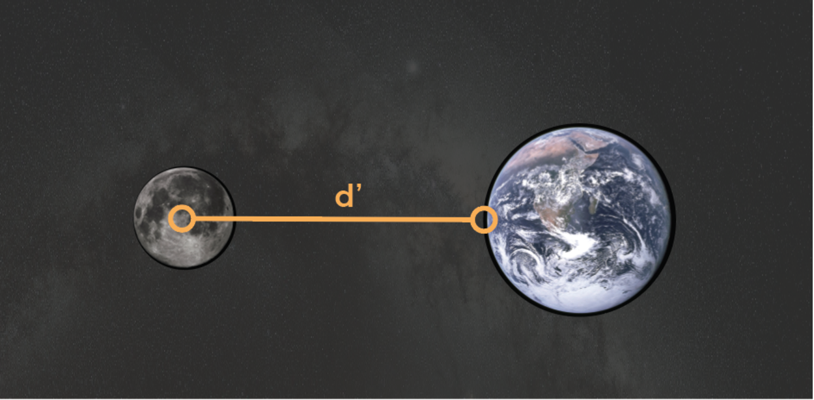
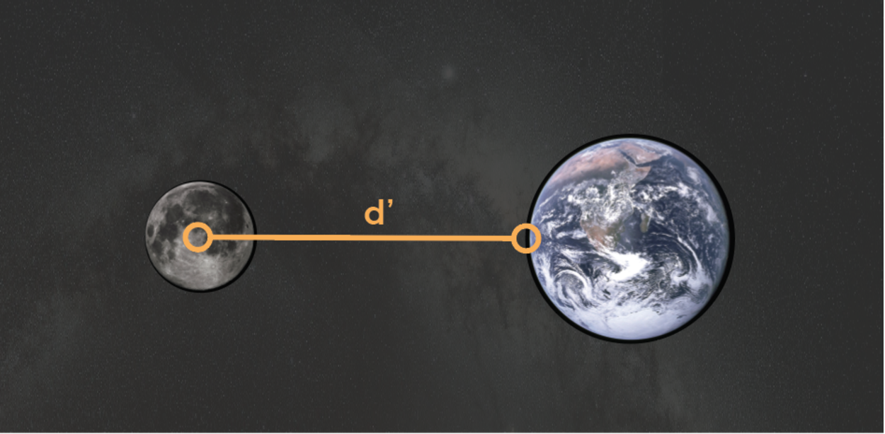

It turns out there’s not one, but two, high tides every day at a given point on Earth’s surface.
It is easiest to think of gravity affecting each object as if the entire object is one solid, non-deformable shape. This is not the case. The Earth pulls on your head slightly less than it pulls on your feet, because your head is farther away from the center of the Earth. The difference is negligible in most cases. When operating on an astronomical scale, these differences become large enough to affect our lives.
If we think the Earth as a perfect sphere, and about the ocean as a sheet of water evenly covering the earth’s surfaces, you’ll note that the water at the
 

The water directly under the moon (at the Sublunar point) is closer to the moon, so gravity pulls it up above the surrounding Earth. At the same time, the earth is closer to the moon than the water on the far side of Earth, so the distance between the seafloor and water level on that side will also be exaggerated.
It’s the difference in gravitational force between the top of the water and the land underneath it that explains the tides. Gravity pulls harder on the near side of the Earth than the far side of Earth.
At certain times, the sun and moon come into alignment and their gravitational effects add up. Twice a month, the Earth experiences spring and neap tides depending on the alignment of the sun and the moon relative to the Earth. During the spring tides, the sun and the moon are aligned on the same side of the Earth. This generates tides that are higher than average. On the other hand, neap tides occur when the moon is at a right angle from the sun relative to the Earth. The gravitational pull from the sun and the moon partially cancel each other, resulting in relatively lower tides.
The green sphere in the center of the application represents the Earth. It has two layers of blue rings, which represent the gravitational pull on that side of Earth.
The sun and the moon start out further away from the Earth. You can observe how their gravitational pulls affect the rings around Earth by clicking and dragging the sun and moon and changing their positions.
We recommend enabling the force vectors so that you can better see the direction and magnitude of the force of gravity as you change the position of the moon.